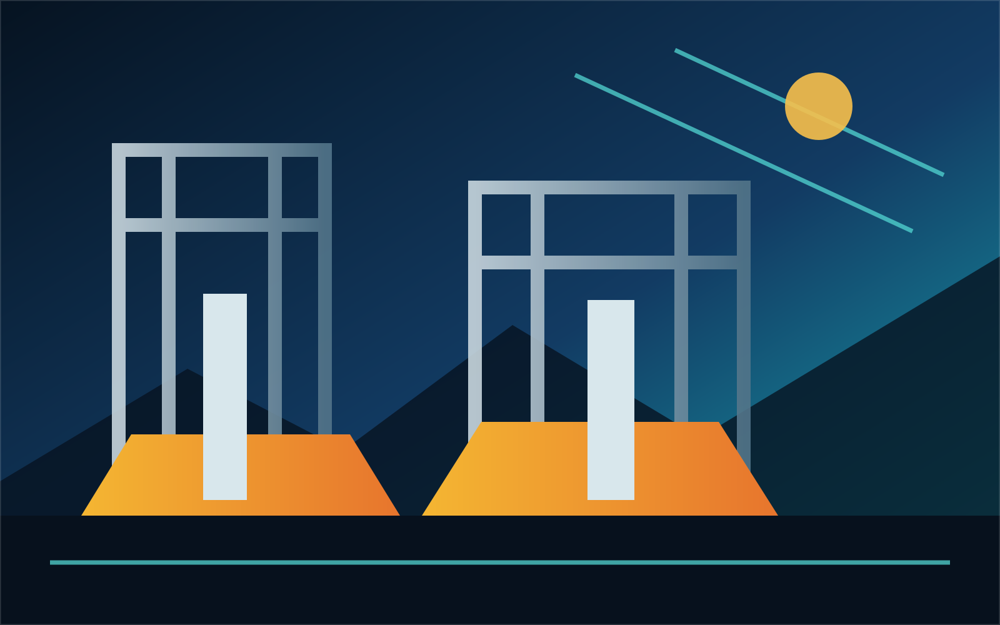

Define
Clarify the requirement, environment, and scope.

Prymm Enterprises / Est. 2017
Specialized industrial, agricultural, medical, and digital goods for organizations that value capability, clarity, and controlled momentum.
Build a sourcing brief ↗Operating method
Clear specifications, disciplined sourcing, and a measured path to the next decision. Prymm is built for private organizations and government institutions that cannot afford ambiguity.
Clarify the requirement, environment, and scope.
Align specifications, documentation, and fit.
Structure the sourcing path and regional hub.
Turn the brief into an informed next move.
Sector command center
Regional operations
Regional sourcing and coordination.
Institutional and metropolitan coordination.
Final decision point
Prepare a sourcing brief. No external submission endpoint is implied until an approved workflow is connected.